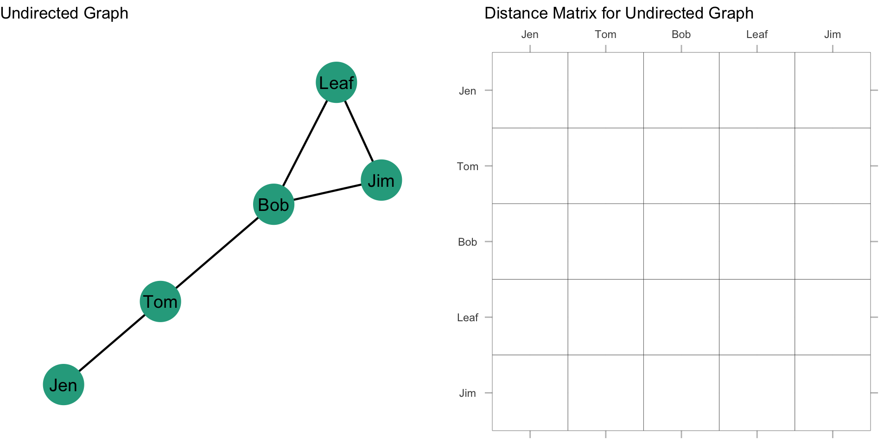
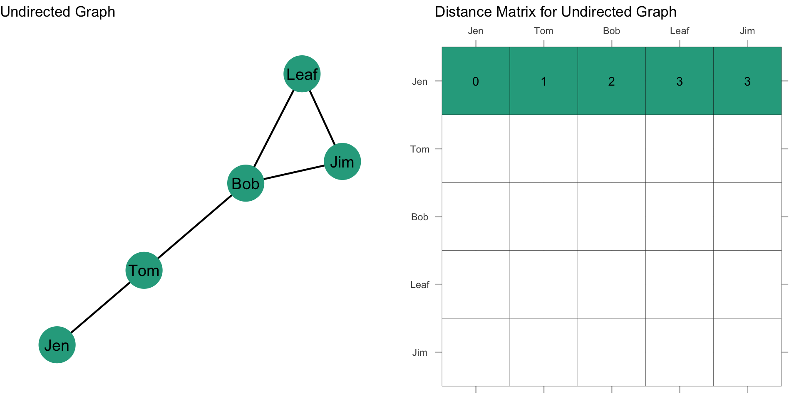
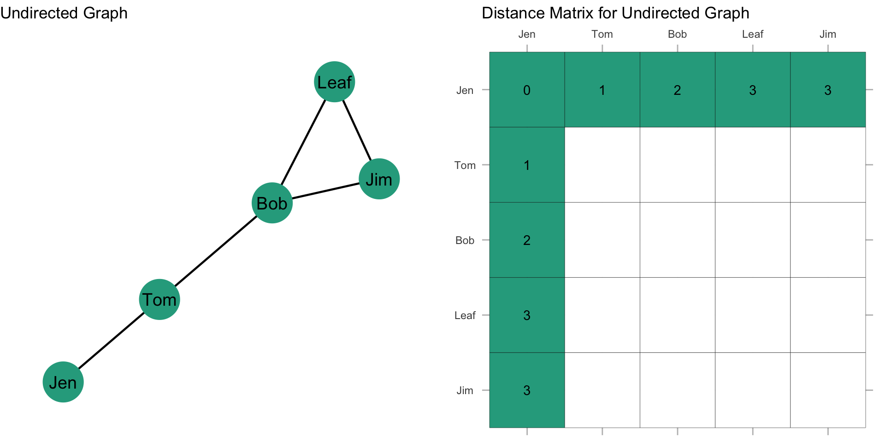
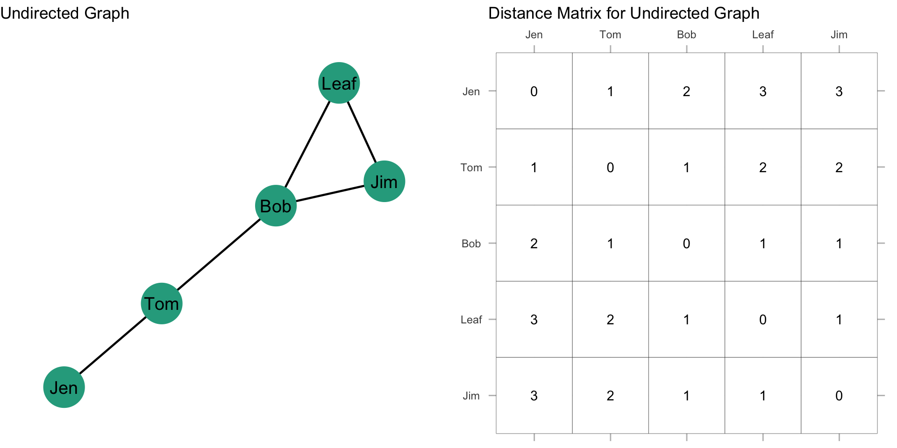
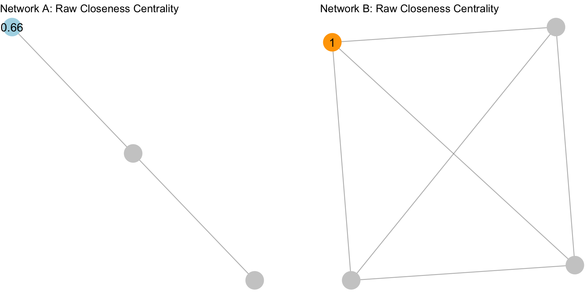
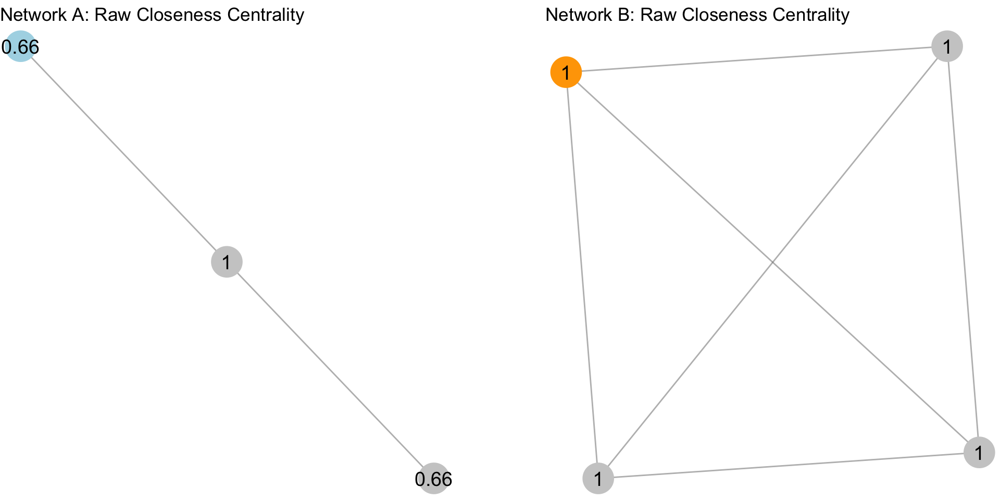
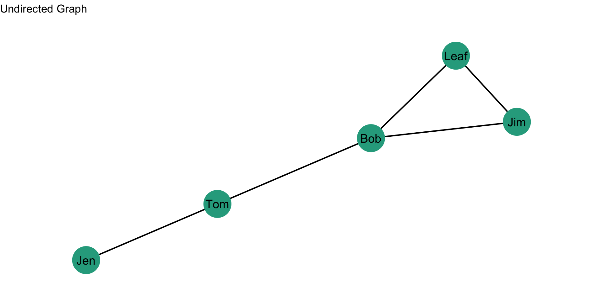
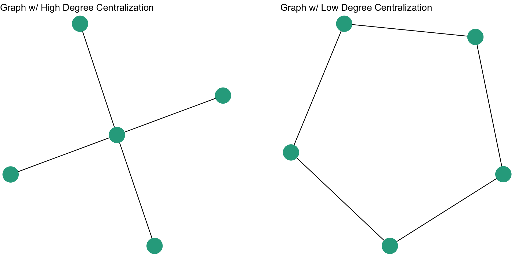

7 Closeness Centrality
In the prior lecture, we examined the idea of “centrality” for nodes and “centralization” for graphs, focusing attention on the conceptual aspects of what it means to be central as well as the ways in which we can operationalize the concept using degree centrality. In this chapter we want to continue thinking about what it means to be central, but through a different conceptual lens: closeness. As a crime analyst, examining closeness centrality can provide crucial insights into the efficiency and influence of individuals within a group that may go beyond what you can glean from examining degree centrality. For instance, Bright, Hughes, and Chalmers (2015) study of drug trafficking networks illustrates how closeness centrality played a pivotal role in understanding the structure and function of illicit organizations. In this study, Bright, Hughes, and Chalmers (2015) examined an Australian drug trafficking network and found that individuals with higher closeness centrality were not necessarily the most visible or directly connected (in terms of degree centrality), but held critical positions because of their proximity to others in the network. These individuals could quickly access and disseminate information across the group, making them key actors in maintaining the flow of drugs, money, and communication. By identifying those with high closeness centrality, law enforcement was able to target individuals who had the potential to disrupt the network’s operations more effectively than simply targeting those with the most connections.
By the end of this chapter, you should be able to:
- Explain the conceptualization of “centrality” as it pertains to closeness centrality.
- Calculate closeness centrality scores for a set of nodes.
- Calculate a closeness centralization score for a graph.
7.1 Case Study: Terror Networks and Closeness
Sageman (2004) studied global Islamist terrorist networks and demonstrated how individuals with high closeness centrality played a key role in maintaining the cohesion and communication efficiency within these decentralized groups. These key players, even though they may not have had the most direct connections (high degree centrality), were crucial in maintaining the operational efficiency of the network. By targeting those with high closeness centrality, counter-terrorism efforts were able to more effectively disrupt communication channels and reduce the operational capabilities of the group.
7.1.1 Closeness Centrality Terms
How close is a node to other nodes? Closeness centrality measures how near a node is to the other nodes in the network. That is, how “close” the nodes are. What we mean by “close” will differ based on whether the graph is undirected or directed. By the conceptual definition is the same. How close nodes are in a graph is based on the inverse of the distance of each node to every other node.
Terminology:
- A path is an edge or sequence of edges that connect two nodes.
- A geodesic is the shortest path between two nodes.
- The distance, \(d(n_i,n_j)\), is the length of the path between i and j.
Another way of saying this is that if we now how “far apart” two nodes are (i.e. the distance), then we can take the inverse of that and know how “close” the nodes are to each other.
7.2 Undirected Graphs
7.2.1 Closeness Centrality
For an undirected binary graph, the closeness is:
\[C_C(n_i) = [\sum\limits_{j=1}^g d(n_i,n_j)]^{-1}\]
This reads as: Find the distance between two nodes i and j, \(d(n_i,n_j)\), sum them, and then take the inverse.
Another way to write this is as:
\[C_C(n_i) = [\sum\limits_{j=1}^g d(n_i,n_j)]^{-1} = \frac{1}{[\sum\limits_{j=1}^g d(n_i,n_j)]}\]
In words, the closeness is 1 divided by the sum of the distances (called the reciprocal).
To find the closeness centrality score, we need to first find the distances between each node. We can express these distances using a matrix, just like we did with the sociomatrix before.
Let’s take a look at this with some data. Recall our example network with Jen, Tom, Bob, Leaf, and Jim:
How far is Jen from Tom? How far is Jen from Bob? In other words, how many edges do we count in going from Jen to Tom? From Jen to Bob?

For our graph, we want to first build a distance matrix which shows the value of the geodesic (i.e. shortest path) from i to j. We can do this by looking at each node and seeing the fewest steps that are needed to reach another node. We can see that Jen can reach Tom in 1 step (i.e. \(L_{Jen,Tom}\)) and that Jen can reach Bob in 2 steps (i.e. \(L_{Jen,Tom}\) & \(L_{Tom,Bob}\)).

Since the graph is undirected, the distance matrix is symmetric about the diagonal (just like we saw with an adjacency matrix). That is, \(d(n_i,n_j) = d(n_j,n_i)\). This gives us:

Now, what about the rest of the distance matrix? If we follow what we did above for everyone else, then we get the following distance matrix:

Now, it we take the sum of the rows, this gives us \(\sum\limits_{j=1}^g d(n_i,n_j)\). Note that since the graph is undirected, the column sum would give us the same values. Since we have \(\sum\limits_{j=1}^g d(n_i,n_j)\), all we need to do now is take the reciprocal by dividing 1 by \(\sum\limits_{j=1}^g d(n_i,n_j)\):
\[C_C(n_i) = \frac{1}{[\sum\limits_{j=1}^g d(n_i,n_j)]}\]
That gives us the closeness centrality score for each individual:
| Node | Distance | Closeness |
|---|---|---|
| Jen | 9 | 1/9 = 0.111 |
| Tom | 6 | 1/6 = 0.167 |
| Bob | 5 | 1/5 = 0.200 |
| Leaf | 7 | 1/7 = 0.143 |
| Jim | 7 | 1/7 = 0.143 |
7.2.2 Standardization
As discussed in the prior chapter, centrality measures are sensitive to the size of the graph, g. In the case of closeness centrality, having to sum over more nodes will push scores closer to zero. Think about it: if we added more rows and columns to our distance matrix, that will increase the denominator, making the quotient smaller. This means that we can’t compare closeness centrality scores across graphs of different sizes. Solution?
Standardize! If we want to compare nodes in different sized networks, then we just take into account the number of nodes and the maximum possible nodes to which i could be connected. In an undirected graph, this is g-1.
Thus, we can calculate a standardized closeness centrality for an undirected graph as:
\[C'_C(n_i) = [\sum\limits_{j=1}^g d(n_i,n_j)]^{-1} \times [g-1]\]
For this graph, the denominator, g-1 is \(5 - 1 = 4\). Plugging that in we get: \(C'_C(n_i) = [\sum\limits_{j=1}^g d(n_i,n_j)]^{-1} \times 4\).
| Node | Distance | Closeness | Standardized Closeness |
|---|---|---|---|
| Jen | 9 | 1/9 = 0.111 | 0.111*4 = 0.444 |
| Tom | 6 | 1/6 = 0.167 | 0.167*4 = 0.668 |
| Bob | 5 | 1/5 = 0.200 | 0.200*4 = 0.800 |
| Leaf | 7 | 1/7 = 0.143 | 0.143*4 = 0.572 |
| Jim | 7 | 1/7 = 0.143 | 0.143*4 = 0.572 |
Standardization is particularly important with closeness centrality because of the sensitivity of the measure to the size of the network. Take for example, the following networks:
The plot above shows two different graphs with the raw closeness centrality scores for two nodes. Note that they have the exact same score. Yet, would you say they are equally close to other nodes in the network? In other words, that their closeness to other nodes is the same?
When we standardize, we adjust for the size of the network:

Now, apply the same thing to the rest of the network:

7.2.3 Closeness Centralization
In the prior chapter we discussed graph centralization, which measures the extent to which the nodes in a network differ from one another in their individual centrality scores. Put differently, how much variation is there in the distribution of centrality scores? As with degree centralization, we can can calculate the closeness centralization of the graph. A key difference, however, is that for closeness centralization, we use the standardized closeness score.
We can calculate closeness centralization as:
\[C_C = \frac{\sum\limits_{i=1}^g[C'_C(n^*)-C'_C(n_i)]}{[(g-2)(g-1)]/(2g-3)}\]
This may look imposing, but we can decompose it to see what it is doing:
- \(C'_C(n^*)\) is the largest standardized closeness score
- \(C'_C(n_i)\) is the standardized closeness score for node i
- \(\sum\limits_{i=1}^g[C'_C(n^*)-C'_C(n_i)]\) simply takes the sum of deviations for each node from the largest value
- Finally, we take that sum and divide it by \([(g-2)(g-1)]/(2g-3)\)
If I lost you in some of the math, don’t worry. Let’s calculate the closeness centralization score for our example graph:

Recall our table of standardized closeness scores:
| Node | Distance | Closeness | Standardized Closeness |
|---|---|---|---|
| Jen | 9 | 1/9 = 0.111 | 0.111*4 = 0.444 |
| Tom | 6 | 1/6 = 0.167 | 0.167*4 = 0.668 |
| Bob | 5 | 1/5 = 0.200 | 0.200*4 = 0.800 |
| Leaf | 7 | 1/7 = 0.143 | 0.143*4 = 0.572 |
| Jim | 7 | 1/7 = 0.143 | 0.143*4 = 0.572 |
What is the largest standardized closeness score? It is 0.8 for Bob. Also, we have \(g = 5\). Now, we just plug these into our equation:
\[C_C = \frac{\sum\limits_{i=1}^g[0.800-C'_C(n_i)]}{[(5-2)(5-1)]/(2*5-3)}\]
| Node | Distance | Closeness | Standardized Closeness | Deviations of Standardized Closeness \(0.800-C'_C(n_i)\) |
|---|---|---|---|---|
| Jen | 9 | 1/9 = 0.111 | 0.111*4 = 0.444 | 0.800 - 0.444 = 0.356 |
| Tom | 6 | 1/6 = 0.167 | 0.167*4 = 0.668 | 0.800 - 0.668 = 0.132 |
| Bob | 5 | 1/5 = 0.200 | 0.200*4 = 0.800 | 0.800 - 0.800 = 0.000 |
| Leaf | 7 | 1/7 = 0.143 | 0.143*4 = 0.572 | 0.800 - 0.572 = 0.228 |
| Jim | 7 | 1/7 = 0.143 | 0.143*4 = 0.572 | 0.800 - 0.572 = 0.228 |
Now, if we total all of the values in the last column we get 0.944. Plugging this in as our numerator, we get:
\[C_C = \frac{0.944}{[(5-2)(5-1)]/(2*5-3)} = \frac{0.944}{1.714} = 0.5507585 \approx 0.551\]
So, the closeness centralization score for our example graph is 0.551. What does this mean?
When closeness centrality is evenly dispersed, meaning that all nodes have the same closeness score, then the numerator in the equation will be zero and the quotient will be close to 0. When there is considerable inequality in the closeness centrality scores between nodes, the quotient will be closer to 1. Thus, closer to 1 indicates that the graph is hierarchically structured and closer to 0 means that the graph is more decentralized.
We can see this by examining two additional undirected networks:

The closeness centralization score for the figure on the left is 1, whereas the closeness centralization score for the figure on the right is 0.
HERE WITH GOING THROUGH
7.3 Test your Knowledge
- ?
7.4 Summary
In this chapter,..In the next chapter we will focus on a final conceptualization and operationalization of centrality: betweenness.